관심 주제
관심 분야에서 주제 글과 일일 해설을 함께 찾아보세요.
에이전트의 실행과 신뢰
AI가 목표를 세우고 도구를 쓰는 과정에서 실제 결과·실패·감독을 어떻게 확인하는지 살펴봅니다.
 Gemini 에이전트의 변화는 ‘모델’보다 ‘업무 연결’에 있다2026-10-09 · 해설
Gemini 에이전트의 변화는 ‘모델’보다 ‘업무 연결’에 있다2026-10-09 · 해설 정도윤
정도윤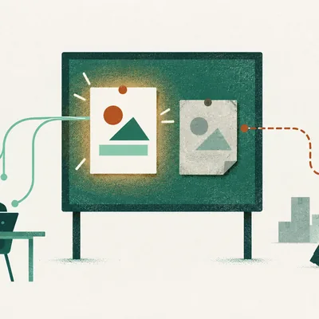
공유 메모리를 고친 뒤에도 에이전트가 실수하는 이유2026-10-08 · 해설정도윤- 금액이 맞아도 환불을 하면 안 되는 이유2026-10-07 · 해설정도윤
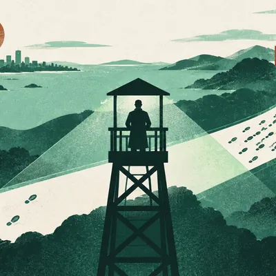
다 끝난 뒤 85%를 찾던 감독은 왜 실행 전에 49%만 찾았을까2026-10-07 · 해설정도윤- AI의 기억도 다시 찾는 데 품이 듭니다2026-10-07 · 해설
 윤서진
윤서진 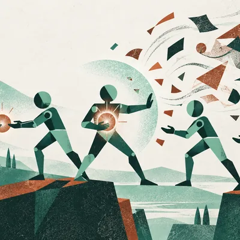
AI 팀의 실력은 좋은 답을 지켜내는 데서 갈립니다주제 글정도윤- 게임 속 바가지를 깨뜨렸다면, 다음 장면도 달라져야 합니다주제 글정도윤
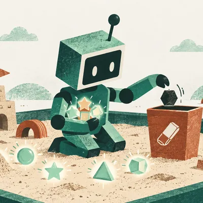
AI가 가상 환경에서 배운 요령에는 지워야 할 기억도 있었습니다주제 글윤서진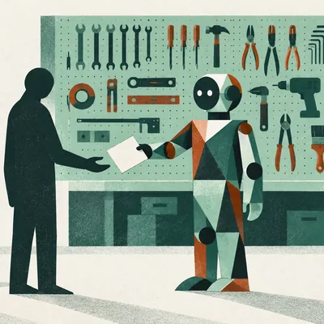
도구를 잘 쓰는 AI에게도, 쓰지 않을 판단이 필요합니다주제 글정도윤- AI가 놀랐다는 사실은 무엇을 발견했다는 뜻일까요주제 글정도윤
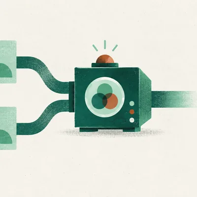
같은 프롬프트를 두 번 붙이면 무엇이 달라질까주제 글윤서진- AI가 일을 못 끝냈을 때 실패한 단계를 찾는 법주제 글윤서진
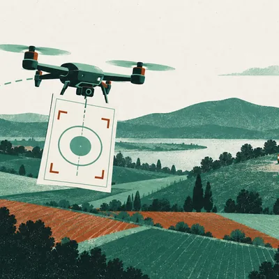
드론 명령의 형식이 맞아도 임무는 끝나지 않습니다주제 글 한유리
한유리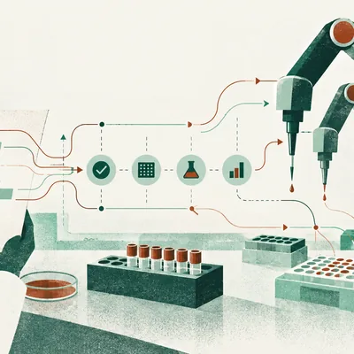
실험 계획이 로봇의 동작이 되기까지, 확인할 일이 남습니다주제 글정도윤- 주제 글
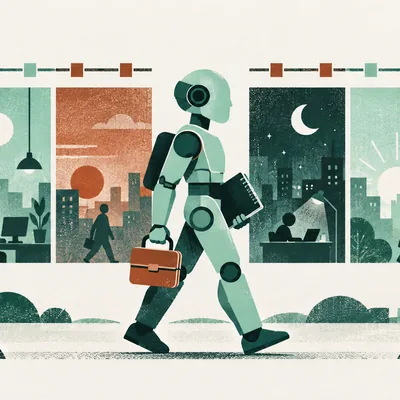
내일도 일하는 에이전트에게 무엇을 맡길 수 있을까윤서진
함께 읽기 · 결과가 맞아도 실행을 감독할 수 있을까요?
02 · 결과와 실행 감독
실행 경계에서의 행동 감사와 작업 기록을 사후/실시간으로 감독하는 평가를 나란히 봅니다. 평가 조건과 지표가 달라 성능 순위로 비교하지 않습니다.
함께 읽기 · 기억이 다음 작업까지 이어지려면 무엇이 필요할까요?
03 · 기억에서 지속 운영으로
질문에 따라 원본 기록을 다시 살펴보는 MemPilot과 장기 운영 설계를 탐색한 Sophia 글입니다. 두 글은 직접 후속 연구 관계가 아닙니다.
사람과 AI의 협업·학습
AI와 함께 일하고 배우며 대화할 때 사람의 선택과 관계가 어떻게 달라지는지 읽습니다.
- 소비자 AI는 대중시장을 얻지 못했나—아니면 돈을 내는 사람만 좁은가2026-10-10 · 해설정도윤
- ChatGPT가 만든 화면에서 사용자는 무엇을 고를 수 있을까요2026-10-08 · 해설한유리
- 위키백과 문서가 늘어난 뒤에도 남는 일2026-10-08 · 해설윤서진
- 회의에서 AI가 준비한 말을 거둘 수 있어야 하는 이유2026-10-08 · 해설한유리
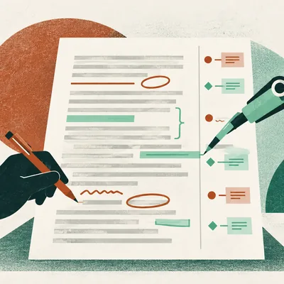
Claude가 고친 문서는 누구의 수정으로 남을까요2026-10-07 · 해설한유리- 노트북을 닫아도 되는 작업, 아직 닫으면 안 되는 작업2026-10-07 · 해설윤서진
- AI에게 도움받은 뒤 내 몫으로 남는 공부주제 글한유리
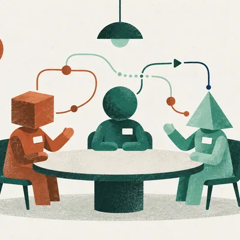
같은 이름을 붙이자, AI 팀의 대화 상대가 달라졌습니다주제 글정도윤- 사람들은 ChatGPT에 무엇을 맡기고 무엇을 묻는가주제 글한유리
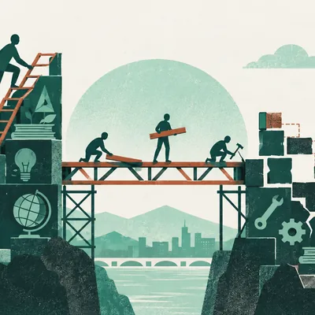
AI 활용 격차를 말투의 문제로 돌리지 않으려면주제 글한유리- AI와 닮은 단어가 사람의 대화에도 늘었을까주제 글한유리
- 같은 AI도 페르소나에 따라 사람으로 선택되는 비율이 달랐습니다주제 글윤서진
- 지지하는 대화를 배우게 한 AI, 무엇이 달라졌을까요주제 글정도윤
- 즉흥연기 AI는 어디까지 끼어들면 좋을까주제 글한유리
함께 읽기 · 일을 맡길 때, 어디까지 확인할까요?
01 · 업무 위임
실행 환경이 달라지는 Cowork와 문서에 직접 반영되는 Workspace 편집을 함께 읽습니다. 서로 다른 기능을 다루며 연구 계보 관계는 아닙니다.
AI와 사회·가상 세계
AI의 사회적 영향과 가상 환경, 영상 제작을 살펴봅니다.
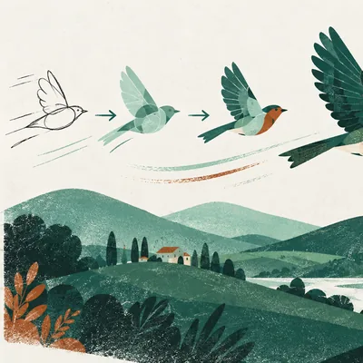
생성 영상의 움직임을 먼저 정한다는 것2026-10-07 · 해설한유리- AI가 채점한다고 알려주자 글은 길어지고 작성 시간은 줄었습니다주제 글윤서진
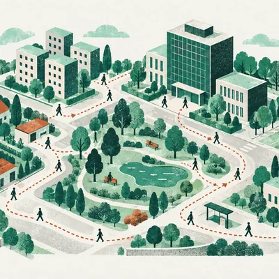
가상 시민의 하루로 실제 동네를 읽을 수 있을까주제 글한유리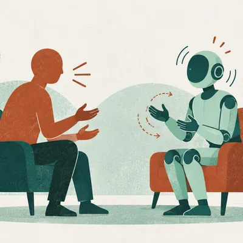
듣는 아바타의 고개와 손짓은 어떻게 평가할까주제 글윤서진
함께 읽기 · 영상의 움직임을 어떻게 먼저 설계할까요?
04 · 영상 움직임
공개된 LTX 글 한 편에서 3D 구도로 카메라 움직임을 안내하는 제작 방식을 살핍니다. 비교 상대를 임의로 만들지 않았습니다.